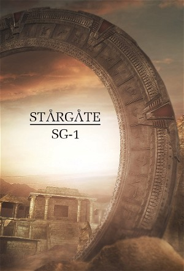

Stargate SG-1 (1997)
ActionAdventureDramaFantasyScience Fiction
| Year | 1997 |
|---|---|
| Rating | TV-PG |
| Status | Completed |
| Seasons | 11 |
| Episodes | 221 |
| Genre | Action, Adventure, Drama, Fantasy, Science Fiction |
This sequel to the 1994 movie Stargate chronicles the further adventures of SGC (Stargate Command). It turned out that the Goa'uld Ra was only one of many alien System Lords who used the Stargates to conquer much of the universe. When Earth uncovers a working cartouche to decipher the coding system of their own Stargate, they find they can now travel anywhere. Earth's military sends out SG teams to explore new planets, find technology, and oppose the Goa'uld. Jack O'Neill and Daniel Jackson from the original movie are part of SG-1. They are joined by Sam Carter, a scientist, and Teal'c, a Jaffa who is convinced the Goa'uld are not gods.
Episodes
Specials
Special installments of the series.
| # | Title | Air Date | Synopsis |
|---|---|---|---|
| 1 | Stargate | 1994-10-27 | An interstellar teleportation device, found in Egypt, leads to a planet with humans resembling ancient Egyptians who worship the god Ra. |
| 2 | From Stargate To Atlantis - A Sci-Fi Lowdown | 2004-06-05 | The Sci-Fi Channel debuted the behind-the-scenes special "From Stargate to Atlantis: A Sci-Fi Lowdown" on July 5, 2004. With great anticipation for the July 9 premiere of of Stargate SG-1's eighth season and the July 16 |
| 3 | Behind The Stargate - Secrets Revealed | 2005-01-17 | The SCI FI Channel previewed the second half of Stargate SG-1 Season Eight and Stargate Atlantis Season One in the behind-the-scenes "Lowdown" special, "Behind the Stargate: Secrets Revealed!" The 1-hour special. |
| 4 | Stargate SG-1: True Science | 2006-01-03 | Amanda Tapping takes us on a fascinating look at how many aspects surrounding SG-1 have a basis in real science. |
| 6 | Sci Fi Inside: Stargate SG-1 200 | 2006-08-18 | The 200th episode of the venerated sci-fi series is discussed during this special. |
| 7 | Stargate: The Ark of Truth | 2008-03-11 | SG-1 search for an Ancient artifact called the Ark of Truth to finally defeat the Ori. However, the Ark is in the Ori's galaxy. |
| 8 | Stargate: Continuum | 2008-07-29 | Ba'al travels back in time and prevents the Stargate program from being started. SG-1 must somehow restore history. |
| 9 | Behind The Mythology of Stargate SG-1 | 2007-04-13 | This special deals with how the SG-1 series intertwined many of Earth's mythologies into its plots and story lines, and about the many alien character connections with Earth’s great mythological figures. |
| 10 | Stargate: The Lowdown | 2003-06-13 | Amanda Tapping and Michael Shanks host this mockumentary on the Stargate to get viewers up-to-speed prior to the beginning of season seven of the series Stargate: SG-1. |
Season 1
A military-science expedition team discovering how to use the ancient device, named the Stargate, to explore the galaxy. However, they encountered a powerful enemy in the film named the Goa'uld, who are bent on destroying Earth and all who oppose them.
| # | Title | Air Date | Synopsis |
|---|---|---|---|
| 1 | Children of the Gods (1) / Children of the Gods (2) | 1997-07-27 | When powerful aliens come through Earth's Stargate, Colonel Jack O'Neill returns to Abydos to retrieve Daniel Jackson, who has discovered that the alien transit system includes much more than the two planets. / Colonel O |
| 3 | The Enemy Within | 1997-08-01 | Major Kawalsky is possessed by a Goa'uld, and the SGC must find a way to remove it without killing him. |
| 4 | Emancipation | 1997-08-08 | An alien civilization is forced to reconsider their views on women when Carter rebels against their social customs. |
| 5 | The Broca Divide | 1997-08-15 | Members of SG-1 become infected with an alien virus that turns them into primitive beings. Dr. Fraiser must find a cure to save the team and the alien population from whom it was contracted. |
| 6 | The First Commandment | 1997-08-22 | SG-1 must stop a renegade Stargate commander, who has gone mad and set himself up as a god on an alien planet. |
| 7 | Cold Lazarus | 1997-08-29 | During an off-world assignment, Jack is struck down by energy from a blue crystal... which creates a duplicate of him that returns to Earth in Jack's place. |
| 8 | The Nox | 1997-09-12 | Pressed by the government to acquire new technologies, SG-1 is led to a world inhabited by a seemingly primative race. When Apophis arrives, SG-1 ambush him with disasterous consequences. |
| 9 | Brief Candle | 1997-09-19 | SG-1 discovers a race of attractive people who age extremely rapidly. The situation becomes personal when O'Neill begins to suffer from the same accelerated aging, and must live out the rest of his life on the planet. |
| 10 | Thor's Hammer | 1997-09-26 | Teal'c and O'Neill are transported to an underground cage designed by the Asgard to protect an alien world from the Goa'uld. |
| 11 | The Torment of Tantalus | 1997-10-03 | SG-1 tracks down Catherine Langford's fiance, who took the first Stargate trip in 1945, and discovers an ancient meeting hall that may hold the secrets of the universe itself. |
| 12 | Bloodlines | 1997-10-10 | Teal'c returns to Chulak to stop his people from implanting his son with a larval Goa'uld. |
| 13 | Fire and Water | 1997-10-17 | Daniel is taken captive by an alien with a hidden agenda, while SG-1 is made to believe he is dead. |
| 14 | Hathor | 1997-10-24 | The banished Goa'uld Hathor is found in an ancient sarcophagus Earth, and takes over the S.G.C. with hopes of raising a new army against the System Lords. |
| 15 | Singularity | 1997-10-31 | A mysterious affliction wipes out the entire population of a planet, plus an SG team -- except for one young girl. Carter befriends her, but learns that she is being used by the Goa'uld. |
| 16 | Cor-Ai | 1998-01-23 | Teal'c must stand trial for a crime committed while he served as first prime of Apophis when a villager on an alien world identifies him as the Jaffa who killed his father. |
| 17 | Enigma | 1998-01-30 | The SG-1 team rescues a group of advanced humans from a planet near destruction, and must find a new home for the refugees before the Pentagon gets their hands on them. |
| 18 | Solitudes | 1998-02-06 | Colonel O'Neill and Captain Carter are separated from Jackson and Teal'c during a Stargate journey, and are trapped on a desolate ice world with no way of escape. |
| 19 | Tin Man | 1998-02-13 | The members of SG-1 arrive on P3X-989 and are knocked unconscious. They wake up and return to Earth only to find that they are not quite themselves. |
| 20 | There But For the Grace of God | 1998-02-20 | An alien artifact transports Daniel to an alternate reality, where he is not a part of the Stargate program and the Goa'uld -- led by Teal'c -- are invading Earth. |
| 21 | Politics (1) | 1998-02-27 | Senator Kinsey arrives at the SGC to investigate the program and determine whether the great drain on the U.S. budget is worthwhile, prompting the team to recall missions from the past year. |
| 22 | Within the Serpent's Grasp (2) | 1998-03-06 | SG-1 escapes through the Stargate before it is shut down, and learns that Daniel's alternate reality vision is true: Apophis is moving to attack Earth from above. The team must stop Apophis and his son, Klorel, who inhab |
Season 2
O'Neill and the team return to Cimmeria, the planet where they destroyed Thor's Hammer to help Teal'c escape. They find that the Goa'uld have invaded and many of the people are dead. Can they help to find Thor's weapons to fight off the invasion before they are all captured or killed?
| # | Title | Air Date | Synopsis |
|---|---|---|---|
| 1 | The Serpent's Lair (3) | 1998-06-26 | With SG-1 trapped on Klorel's ship, it seems that Earth is doomed as the Pyramid Ships prepare to destroy Earth. |
| 2 | In the Line of Duty | 1998-07-03 | Carter is possessed by a Goa'uld who claims to be an enemy of the System Lords. |
| 3 | Prisoners | 1998-07-10 | SG-1 is put on trial and exiled to a prison world, where a woman maintains a strange control over her fellow prisoners. |
| 4 | The Gamekeeper | 1998-07-17 | SG-1 is imprisoned in a virtual reality realm and forced to relive the worst moments of their lives over and over. |
| 5 | Need | 1998-07-24 | Jackson becomes addicted to the effects of a Goa'uld sarcophagus, and falls for the planet's manipulative princess. |
| 6 | Thor's Chariot | 1998-07-31 | SG-1 returns to Cimmeria, and finds that without protection from the Asgard the planet has been invaded by the Goa'uld. |
| 7 | Message in a Bottle | 1998-08-07 | SG-1 discovers an ancient artifact that takes O'Neill and the S.G.C. hostage. |
| 8 | Family | 1998-08-14 | The SG-1 team attempt to rescue Teal'c's son, who has been kidnapped and brainwashed by Apophis. Teal'c learns disturbing news about his wife. |
| 9 | Secrets | 1998-08-21 | Jackson discovers that his wife has returned to Abydos, and is nine months pregnant with the son of Apophis. O'Neill must keep the secret of the Stargate program from being uncovered. |
| 10 | Bane | 1998-09-25 | Teal'c is infected with deadly venom from a giant insect, and begins a terrible transformation. When he escapes the S.G.C., SG-1 must find him before Colonel Maybourne does. |
| 11 | The Tok'ra (1) | 1998-10-02 | SG-1 locates the Tok'ra, a Goa'uld resistence movement who oppose the System Lords, and attempt to form an alliance. Jacob Carter's cancer brings him near death. |
| 12 | The Tok'ra (2) | 1998-10-09 | While SG-1 tries to form an alliance with the Tok'ra, a spy betrays the rebels to the Goa'uld. Jacob Carter finds that the Tok'ra may be his only hope of survival |
| 13 | Spirits | 1998-10-23 | SG-1 finds a planet inhabited by Native American Indians, protected by spirits who are actually advanced alien shapeshifters. |
| 14 | Touchstone | 1998-10-30 | SG-1 is accused of stealing an important weather-controlling device, sending a primative planet into chaos. The team discovers that Earth's second Stargate is being misused. |
| 15 | The Fifth Race | 1999-01-22 | O'Neill becomes the unwilling receptacle for a library of alien knowledge. |
| 16 | A Matter of Time | 1999-01-29 | After gating to a world on the edge of a black hole, the S.G.C. cannot disengage the Stargate. All of Earth becomes endangered by the time-distorting gravity field. |
| 17 | Holiday | 1999-02-05 | SG-1 discovers an elderly man known for developing technology to fight the Goa'uld. Daniel is tricked into switching bodies with the man, Ma'chello, who believes he is "owed" for all the good he has done. |
| 18 | Serpent's Song | 1999-02-12 | Apophis, SG-1's greatest enemy, seeks sanctuary from Sokar and ends up near death in the S.G.C. infirmiry. |
| 19 | One False Step | 1999-02-19 | A group of primitive aliens begin to fall deathly ill after SG-1 arrives. |
| 20 | Show and Tell | 1999-02-26 | A young boy arrives through the Stargate, and warns of plot by invisible aliens to kill all of the human race in order to rob the Goa'uld of potential hosts. |
| 21 | 1969 | 1999-03-05 | A cosmic accident causes SG-1 to be sent back 30 years into Earth's past, where they must locate the Stargate and find a way home. |
| 22 | Out of Mind (1) | 1999-03-12 | O'Neill, Carter and Jackson awaken from stasis in what appears to be the S.G.C. -- almost 80 years in the future. |
Season 3
SG-1 in their fight against the Goa'uld Empire's System Lords, the main being Sokar until "The Devil You Know" and then Apophis, after he regained power during that episode.
| # | Title | Air Date | Synopsis |
|---|---|---|---|
| 1 | Into the Fire (2) | 1999-06-25 | O'Neill, Carter and Jackson must escape Hathor's clutches, while Teal'c tries to raise a Jaffa army on Chulak. General Hammond must take desperate measures to rescue the team. |
| 2 | Seth | 1999-07-02 | SG-1 must find a renegade Goa'uld who has been hiding on Earth for thousands of years. |
| 3 | Fair Game | 1999-07-09 | The Asgard aid Earth in negotiating a nonagression treaty with the Goa'uld System Lords. |
| 4 | Legacy | 1999-07-16 | When Daniel goes insane, SG-1 must deal with the legacy of Machello's anti-Goa'uld technology. |
| 5 | Learning Curve | 1999-07-23 | SG-1 discovers a planet where children are used to acquire knowledge for the entire population, then discarded. |
| 6 | Point of View | 1999-07-30 | SG-1 must free an alternate reality Earth from a Goa'uld invasion after duplicates of Samantha Carter and Charles Kawalsky come through the quantum mirror. |
| 7 | Deadman Switch | 1999-08-06 | SG-1 is taken captive by an alien bounty hunter with uncertain loyalties. |
| 8 | Demons | 1999-08-13 | SG-1 finds a medieval Christian society terrorized by Sokar and the Unas, and is accused of being possessed by demons. |
| 9 | Rules of Engagement | 1999-08-20 | SG-1 discovers a military camp where young men are trained to impersonate SGC personnel to infiltrate Earth. |
| 10 | Forever in a Day | 1999-10-08 | Jackson deals with the apparent death of his wife, Sha're, at the hands of Teal'c. |
| 11 | Past and Present | 1999-10-15 | SG-1 encounters an entire planet suffering from amnesia. The planet's leader returns to Earth with SG-1 to find a cure, but SG-1 suspects she may not be who she appears to be. |
| 12 | Jolinar's Memories (1) | 1999-10-22 | When Major Carter's father Jacob is kidnapped by Sokar, the SG-1 team must infiltrate a prison moon designed to look like hell to rescue him. |
| 13 | The Devil You Know (2) | 1999-10-29 | SG-1 must escape a hellish prison moon, and one of their worst enemies. |
| 14 | Foothold | 1999-11-05 | SG-1 returns from a mission and discovers that metamorphic aliens have taken over the complex. |
| 15 | Pretense | 2000-01-21 | The Tollan put Skaara and Klorel on trial to determine who will control the host body. |
| 16 | Urgo | 2000-01-28 | SG-1 receives alien brain implants that manifest themselves as a bizarre man, who tells them that they would not survive the procedure to remove him. |
| 17 | A Hundred Days | 2000-02-04 | After a meteor strike buries the Stargate, O'Neill finds himself stranded on a planet with no hope of rescue. |
| 18 | Shades of Grey | 2000-02-11 | O'Neill steals technology from the Tollan, and is forced to leave the Stargate program. Maybourne offers an intriguing proposal. |
| 19 | New Ground | 2000-02-18 | The members of SG-1 are imprisoned on a planet and become pawns in a war of ideology. |
| 20 | Maternal Instinct | 2000-02-25 | SG-1 discovers the mystical planet Kheb, and must find the Harcesis child of Apophis and Sha're before Apophis's army does. |
| 21 | Crystal Skull | 2000-03-03 | An alien artifact causes Daniel to disappear, and the team looks for help from his institutionalized grandfather. |
| 22 | Nemesis (1) | 2000-03-10 | SG-1 faces creatures of mass destruction that even the Asgard can't control, and must destroy Thor's infested vessel before the Replicator bugs reach Earth. |
Season 4
O'Neill and Teal'c risk their lives to keep the Replicator bugs from gaining a foothold on Earth, while Carter helps the Asgard fend off a Replicator invasion. A warring alien race offers to exchange their advanced technology for Earth's help in defeating their enemy.
| # | Title | Air Date | Synopsis |
|---|---|---|---|
| 1 | Small Victories (2) | 2000-06-30 | O'Neill and Teal'c risk their lives to keep the Replicator bugs from gaining a foothold on Earth, while Carter helps the Asgard fend off a Replicator invasion. |
| 2 | The Other Side | 2000-07-07 | A warring alien race offers to exchange their advanced technology for Earth's help in defeating their enemy. |
| 3 | Upgrades | 2000-07-14 | A Tok'ra archaeologist arrives at the SGC with newly discovered technology, giving the SG-1 team superhuman powers. |
| 4 | Crossroads | 2000-07-21 | Teal'c is reunited with his lost love -- a woman who claims to have found a way to communicate with her symbiote and defeat the Goa'uld. |
| 5 | Divide and Conquer | 2000-07-28 | When a member of the SGC tries to kill a Tok'ra, it is revealed that O'Neill and Carter may be victims of an untraceable form of Goa'uld mind control. |
| 6 | Window of Opportunity | 2000-08-04 | O'Neill and Teal'c are caught in a time loop in the SGC, and must relive the same 10 hours over and over again. |
| 7 | Watergate | 2000-08-11 | The Russians recover a Stargate from the bottom of the ocean, and turn to the SGC for help when their experiments go awry. |
| 8 | The First Ones | 2000-08-18 | Dr. Jackson is taken captive by an Unas while on an archaeological dig. The SGC mounts a rescue operation, but discovers a danger of their own. |
| 9 | Scorched Earth | 2000-08-25 | SG-1 is caught in a conflict between two civilizations trying to colonize the same planet. |
| 10 | Beneath the Surface | 2000-09-01 | The members of SG-1 are used as forced labor in an underground alien facility after their memories are erased by the ruling elite. |
| 11 | Point of No Return | 2000-09-08 | SG-1 investigates a conspiracy theorist who has detailed knowledge of the Stargate program. |
| 12 | Tangent | 2000-09-15 | A test gone wrong leaves Jack and Teal'c marooned in space aboard a damaged prototype attack ship |
| 13 | The Curse | 2000-09-22 | When his former mentor dies, Dr. Jackson returns to his roots -- and discovers an ancient Egyptian artifact containing a Goa'uld parasite. |
| 14 | The Serpent's Venom | 2000-09-29 | SG-1 must stop Apophis and Heru-ur from forming an alliance of their powerful forces, while Teal'c is captured and tortured by the Goa'uld. |
| 15 | Chain Reaction | 2001-01-05 | SG-1 must adjust to a new commanding officer when General Hammond steps down -- but O'Neill discovers foul play behind the general's resignation. |
| 16 | 2010 | 2001-01-12 | Ten years into the future, the former members of SG-1 must send a message into the past to prevent the extinction of the human race. |
| 17 | Absolute Power | 2001-01-19 | Jackson's teammates notice a disturbing change in him when he is reunited with the Harcesis child and given the Goa'uld genetic memory. |
| 18 | The Light | 2001-01-26 | SG-1 finds a deserted Goa'uld palace, where a beautiful device causes suicidal tendencies. |
| 19 | Prodigy | 2001-02-02 | Carter must help keep a promising young cadet from throwing away a future at the SGC. O'Neill and Teal'c encounter a dangerous life form at an offworld research base. |
| 20 | Entity | 2001-02-09 | The SGC is invaded by an alien life force that takes up residence in the base computer system -- and in Major Carter. |
| 21 | Double Jeopardy | 2001-02-16 | SG-1 must rescue an alien world from the Goa'uld -- with help from an unexpected source. Teal'c seeks revenge on the System Lord Cronus for the murder of his father. |
| 22 | Exodus (1) | 2001-02-23 | SG-1 helps to evacuate the Tok'ra to a new base -- but matters are complicated when a spy reveals their location to Apophis. The team attempts a daring plan to take out the Goa'uld's powerful fleet. |
Season 5
SG-1 trains a team of raw cadets, and Colonel O'Neill is forced to take them into a real-life battle situation when he learns of a possible alien incursion at the S.G.C. After an accident with the Stargate traps Teal'c in transit, SG-1 must turn to Russia – and to their enemies – for help before time runs out.
| # | Title | Air Date | Synopsis |
|---|---|---|---|
| 1 | Enemies (2) | 2001-06-29 | SG-1 finds themselves stranded in a crippled ship in a distant galaxy -- with Apophis threatening to destroy them. Teal'c is brainwashed and made loyal to Apophis once again. |
| 2 | Threshold (3) | 2001-07-06 | His mind altered by Apophis, Teal'c must undergo a ritual that takes him to the edge of death itself, in order for him to rediscover who he is. |
| 3 | Ascension | 2001-07-13 | An alien being is smitten with Carter and follows her back to Earth. It assumes a human form and pursues a relationship with her. |
| 4 | The Fifth Man | 2001-07-20 | O'Neill and Lieutenant Tyler are ambushed by Goa'uld forces and trapped behind enemy lines -- while the rest of their team discover they don't know who Tyler is. |
| 5 | Red Sky | 2001-07-27 | SG-1 discovers that their recent trip through the Stargate may have inadvertently doomed an entire civilization. |
| 6 | Rite of Passage | 2001-08-03 | Cassandra mysteriously falls ill, sending SG-1 back to her home planet -- where they uncover a dark Goa'uld secret. |
| 7 | Beast of Burden | 2001-08-10 | SG-1 discovers a civilization that uses Unas as slave labor, and attempt to liberate Daniel's friend, Chaka. |
| 8 | The Tomb | 2001-08-17 | SG-1 teams with a Russian unit when one of their Stargate teams goes missing in a mysterious alien ziggurat. |
| 9 | Between Two Fires | 2001-08-24 | The Tollan offer Earth advanced weapons technology, prompting a secret investigation on Tollana -- one that leads to a startling discovery. |
| 10 | 2001 | 2001-08-31 | SG-1 encounters a potential new, technologically advanced ally in the war against the Goa'uld -- though they do not know the Aschen's dark secret. |
| 11 | Desperate Measures | 2001-09-07 | When Carter goes missing, O'Neill teams up with Col. Maybourne again to free her. |
| 12 | Wormhole X-Treme! | 2001-09-08 | An alien ship approaches Earth, sending SG-1 to an old friend for some answers -- where they discover that Martin Lloyd has created a TV show about the Stargate program. |
| 13 | Proving Ground | 2002-03-08 | SG-1 trains a team of raw cadets, and Colonel O'Neill is forced to take them into a real-life battle situation when he learns of a possible alien incursion at the SGC. |
| 14 | 48 Hours | 2002-03-15 | Disaster strikes the Stargate, trapping Teal'c in transit. SG-1 must turn to Russia -- and to their enemies -- for help. |
| 15 | Summit (1) | 2002-03-22 | The Tok'ra war with the Goa'uld escalates, and the rebel faction sends Daniel Jackson to a secret meeting between the System Lords. |
| 16 | Last Stand (2) | 2002-03-29 | Dr. Jackson's undercover mission to a Goa'uld summit is complicated by the arrival of a surprise guest. The rest of the team face a full-scale invasion of the Tok'ra homeworld. |
| 17 | Fail Safe | 2002-04-05 | Earth finds itself threatened by something even larger than the Goa'uld when the team learns that an asteroid is on a collision course with the planet. |
| 18 | The Warrior | 2002-04-12 | A charismatic Jaffa leader seeks to forge an alliance between Earth and his rebel followers, winning the allegiance of Teal'c and Bra'tac. |
| 19 | Menace | 2002-04-26 | SG-1 encounters a young woman with the ability to control Replicators, and who may hold the key to the salvation of the Asgard. |
| 20 | The Sentinel | 2002-05-03 | SG-1 must turn to a pair of convicted criminals to save a world from annihilation by the Goa'uld. |
| 21 | Meridian | 2002-05-10 | Daniel Jackson is exposed to a lethal dose of radiation while visiting an alien civilization that is building a weapon of mass destruction. |
| 22 | Revelations | 2002-05-17 | SG-1 must come to the rescue of their once-powerful allies when the Goa'uld attack a secret Asgard laboratory. |
Season 6
O'Neill and Carter launch a risky plan with untested technology when Earth comes under attack by the Goa'uld. Carter must find a way to save Earth from total destruction at the hands of the Goa'uld, who have turned the Stargate into a doomsday bomb. Rya'c joins his father on a mission to destroy the Goa'uld weapon.
| # | Title | Air Date | Synopsis |
|---|---|---|---|
| 1 | Redemption (1) | 2002-06-07 | Tragedy reunites Teal'c with his son, who blames him for the death of his mother. O'Neill and Carter launch a risky plan with untested technology when Earth comes under attack by the Goa'uld. |
| 2 | Redemption (2) | 2002-06-14 | Carter must find a way to save Earth from total destruction at the hands of the Goa'uld, who have turned the Stargate into a doomsday bomb. Rya'c joins his father on a mission to destroy the Goa'uld weapon. |
| 3 | Descent | 2002-06-21 | SG-1 boards an abandoned Goa'uld mothership that has mysteriously arrived in Earth's orbit, and must escape the doomed vessel when it crashes into the ocean. |
| 4 | Frozen | 2002-06-28 | SG-1 investigates the discovery of a woman frozen in the ice in Antarctica, who may be a link to the gate builders. A mysterious disease threatens to kill everyone at the research base. |
| 5 | Nightwalkers | 2002-07-12 | Carter, Teal'c and Jonas investigate the death of a scientist with connections to the Goa'uld, and find a small town whose citizens harbor a dark secret. |
| 6 | Abyss | 2002-07-19 | O'Neill is captured and tortured by the Goa'uld, and must rely on an old friend to survive. |
| 7 | Shadow Play | 2002-07-26 | Jonas' people ask Earth for military aide in an impending war with their rival nations, but his former mentor offers another solution: a resistance movement ready for a coup. |
| 8 | The Other Guys | 2002-08-02 | When SG-1 is captured by the Goa'uld, a pair of scientists mount a rescue operation ... whether they're wanted or not. |
| 9 | Allegiance | 2002-08-09 | Tensions rise between the Tok'ra and rebel Jaffa at the S.G.C.'s offworld base when they are attacked by an invisible enemy. |
| 10 | Cure | 2002-08-16 | An alien world offers Earth a medicine with the power to cure any illness -- but the hidden price may be too high to pay. |
| 11 | Prometheus (1) | 2002-08-23 | A news reporter threatens to expose a top-secret military project, but when Carter and Jonas give her a tour of the X-303, they discover that she is a pawn in a much larger plot. |
| 12 | Unnatural Selection (2) | 2003-01-10 | The team is called into battle unexpectedly when the Asgard homeworld is overrun by Replicators -- which have evolved into a startling new form. |
| 13 | Sight Unseen | 2003-01-17 | The team returns to Earth with a piece of technology that allows them to see alien creatures everywhere, and must attempt to contain the problem when it spreads beyond the base. |
| 14 | Smoke & Mirrors | 2003-01-24 | Colonel O'Neill is charged with the murder of Senator Kinsey, and the rest of the team must uncover a conspiracy in order to clear his name. |
| 15 | Paradise Lost | 2003-01-31 | Colonel O'Neill is trapped on an alien planet with Maybourne, and must fight to stay alive as his companion becomes increasingly paranoid. |
| 16 | Metamorphosis | 2003-02-07 | SG-1 attempts to save a planet's inhabitants from Nirrti's genetic experimentation, but find themselves to be her next victims. |
| 17 | Disclosure | 2003-02-14 | General Hammond and the Pentagon reveal the existence of the Stargate to other world governments, and must defend the fact that the program is operated by the United States military. |
| 18 | Forsaken | 2003-02-21 | When the team finds a crashed ship on another planet, their efforts to help the crew effect repairs are hindered by a group of aliens. |
| 19 | The Changeling | 2003-02-28 | A near-death trial causes Teal'c to imagine his life as very different from the one he knows, where he is a normal person living on Earth -- until he can no longer distinguish reality. |
| 20 | Memento | 2003-03-07 | Prometheus is forced to land on an alien world, where the local Stargate is the team's only chance of returning home -- though the local population believe the gate to be a myth. |
| 21 | Prophecy | 2003-03-14 | The team finds an impoverished world enslaved by a Goa'uld underlord, but their plans to free it may be compromised when Jonas experiences unexplained visions of the future. |
| 22 | Full Circle | 2003-03-21 | SG-1 is called to defend the people of Abydos from the Goa'uld once again when they learn that Anubis, in search of a powerful device, is about to attack. |
Season 7
SG-1 discovers Daniel Jackson alive and living on an alien world, with no memory of who he is. The team hatches a plan to lure Anubis into a trap and destroy his new super-weapon. The team returns to Jonas's homeworld when they learn that the Goa'uld are after its naquadria.
| # | Title | Air Date | Synopsis |
|---|---|---|---|
| 1 | Fallen (1) | 2003-06-13 | While searching for the Lost City of the Ancients on a distant planet, SG-1 is stunned to find Daniel Jackson alive and in human form but stripped of his memory. O'Neill convinces Daniel to return with them to the SGC, |
| 2 | Homecoming (2) | 2003-06-13 | The team returns to Jonas' homeworld when they learn that the Goa'uld are after its naquadria. When Jonas is captured by Anubis, Daniel is his only hope. |
| 3 | Fragile Balance | 2003-06-20 | A teenage boy shows up at the S.G.C. claiming to be Jack O'Neill, sending the team on a mission to uncover his true identity. |
| 4 | Orpheus | 2003-06-27 | After an injury, Teal'c must put aside his self-doubt when SG-1 launches a mission to rescue his son and his mentor from a Jaffa death camp. |
| 5 | Revisions | 2003-07-11 | The team gates to a climate-controlled environment amidst a toxic wasteland, whose people are all linked to a central computer. |
| 6 | Lifeboat | 2003-07-18 | When SG-1 finds a crashed alien space ship, Daniel's mind is taken over by its disembodied passengers. |
| 7 | Enemy Mine | 2003-07-25 | When Earth's attempts to exploit a newly-discovered naquadah mine are thwarted by a tribe of indigenous Unas, SG-1 must turn to an old friend for help. |
| 8 | Space Race | 2003-08-01 | Major Carter joins an alien pilot for a space race, where the winner is awarded a lucrative contract with the planet's most powerful corporation. But the rest of the team discovers that there is more at stake than the fi |
| 9 | Avenger 2.0 | 2003-08-08 | An S.G.C. scientist creates a computer virus to be used to disable enemy Stargates -- but succeeds in shutting down the entire gate network. |
| 10 | Birthright | 2003-08-15 | The team finds a fugitive colony of Jaffa women, who must prey on other Jaffa to acquire symbiotes. |
| 11 | Evolution (1) | 2003-08-22 | The team investigates an unstoppable new enemy soldier engineered by Anubis. Dr. Jackson leads a team in search of an alien device in Central America, but gets more than he bargained for. |
| 12 | Evolution (2) | 2004-01-09 | O'Neill seeks help from a former comrade to rescue Daniel and Dr. Lee, who have been kidnapped in Central America. Carter, Teal'c and Jacob infiltrate Anubis' super-soldier facility. |
| 13 | Grace | 2004-01-16 | Carter is injured when the Prometheus is attacked by an unknown ship, and awakens to find herself stranded alone in deep space. |
| 14 | Fallout | 2004-01-23 | When the Kelownans discover that a massive underground vein of naquadah is being converted into naquadria, Jonas Quinn seeks help from Earth in avoiding the total destruction of his planet. |
| 15 | Chimera | 2004-01-30 | Daniel is plagued by dreams of his former girlfriend, who has been taken as a Goa'uld host. Samantha Carter begins a romantic relationship with a detective, from whom she must hide her life at Stargate Command. |
| 16 | Death Knell | 2004-02-06 | Earth's secret offworld base is attacked by Anubis' forces, and Major Carter finds herself being hunted by the enemy. General Hammond and Jacob Carter make an unnerving discovery about the Earth-Tok'ra alliance. |
| 17 | Heroes (1) | 2004-02-13 | A film crew arrives to document the work of the S.G.C. for eventual disclosure to the public, but finds that the base's personnel are less than eager to participate. |
| 18 | Heroes (2) | 2004-02-20 | SG-1 is called into action while a film crew is documenting the Stargate program, but the S.G.C. comes under investigation after the mission goes terribly wrong. |
| 19 | Resurrection | 2004-02-27 | SG-1 investigates a secret N.I.D. laboratory, where a ruthless scientist has used cloning technology to create a Goa'uld-human hybrid. |
| 20 | Inauguration | 2004-03-05 | The newly-elected president is debriefed about the Stargate program, and Vice President Kinsey makes a new play for control of the program. |
| 21 | Lost City (1) / Lost City (2) | 2004-03-12 | O'Neill goes to great lengths to keep the Ancients' knowledge from falling into Goa'uld hands when the team discovers a second repository. The President replaces General Hammond with a civilian diplomat. / Anubis begins |
Season 8
With Jack still in stasis in the Ancient outpost buried in Antarctica, SG-1 tries to contact the Asgard. Meanwhile their new leader, Dr. Elizabeth Weir, tries to decide what to do about a request for peace talks from the Goa'uld System Lords.
| # | Title | Air Date | Synopsis |
|---|---|---|---|
| 1 | New Order (1) | 2004-07-09 | Carter and Teal'c go in search of the Asgard to try and save Colonel O'Neill, but discover that the Asgard's enemy has returned with a vengeance. The System Lords seek an alliance with Earth against a common enemy. |
| 2 | New Order (2) | 2004-07-09 | While the Goa'uld threaten to attack Earth, SG-1 and the Asgard make a last, desperate stand against the Replicators, which have captured Major Carter and invaded the last outpost of the Asgard civilization. |
| 3 | Lockdown | 2004-07-23 | The S.G.C. is put under quarantine after a mysterious infection leaves a Russian officer in the infirmary -- but the disease may not be a disease at all. |
| 4 | Zero Hour | 2004-07-30 | General O'Neill tries to settle into his new job, but faces never-ending crises - including the capture of SG-1 by the Goa'uld. |
| 5 | Icon | 2004-08-06 | Daniel is stranded on another planet after the team's arrival on an alien world sparks a violent civil war. |
| 6 | Avatar | 2004-08-13 | Teal'c is trapped in a virtual reality simulation, in which he must defend the base from a Goa'uld super-soldier incursion. |
| 7 | Affinity | 2004-08-20 | Teal'c becomes the chief suspect in a murder investigation after he moves into an apartment off-base. Carter considers her future with Pete. |
| 8 | Covenant | 2004-08-27 | A businessman threatens to expose the secrets of alien life to the world, forcing Stargate Command to bring him into the loop. |
| 9 | Sacrifices | 2004-09-10 | The impending wedding of his son is the least of Teal'c's worries when the Hak'tyl plan an uprising against the Goa'uld Moloc, driving a wedge between Teal'c and Ishta. |
| 10 | Endgame | 2004-09-17 | The Stargate is stolen, leading SG-1 to discover that the Trust has taken control of an advanced ship in orbit. Teal'c investigates a series of wide-spread Jaffa deaths. |
| 11 | Gemini | 2005-01-21 | A duplicate of Colonel Carter seeks help from Stargate Command in defeating the Replicator Fifth, who she claims has found a way to counter the Asgard's new weapon. |
| 12 | Prometheus Unbound | 2005-01-28 | After the Prometheus responds to a distress call from a Goa'uld ship, Daniel Jackson finds himself a captive when Earth's ship is stolen. |
| 13 | It's Good To Be King | 2005-02-04 | SG-1 comes to the aid of a world about to be invaded by the Goa'uld, only to discover that the local king is Earth's Harry Maybourne. |
| 14 | Full Alert | 2005-02-11 | Relations between the U.S. and Russia are strained when Russian military leaders claim that the U.S. government has been compromised by the Goa'uld. |
| 15 | Citizen Joe | 2005-02-18 | Jack is confronted in his home by an irate barber...who claims to know everything about the Stargate project and SG-1. |
| 16 | Reckoning (1) | 2005-02-25 | The Replicators begin a systematic attack of the Goa'uld, forcing Baal to come to Earth for help. The Jaffa Resistance risk their entire movement in an attempt to retake a holy city in Baal's domain. |
| 17 | Reckoning (2) | 2005-03-04 | The fate of the galaxy hangs in the balance as Sam and Jacob search for the only weapon capable of stopping the Replicator onslaught. O'Neill leads a defense of the S.G.C., while Daniel squares off against Replicator Car |
| 18 | Threads | 2005-03-11 | While Daniel finds himself in a mysterious diner suspended between death and ascension, Jacob's fate takes an unexpected turn, Jack and Sam consider their romantic lives, and Anubis unleashes his plan for galactic destru |
| 19 | Moebius (1) | 2005-03-18 | SG-1 travels back in time in a daring plan to steal a piece of Ancient technology from Ra, the powerful Goa'uld who ruled in ancient Egypt. |
| 20 | Moebius (2) | 2005-03-25 | With the timeline changed by SG-1's actions in the distant past, an alternate version of SG-1 must use the newly-discovered time ship to set things right. |
Season 9
Colonel Samantha Carter works in Area 51, Teal'c is now working full-time for the Free Jaffa Nation on Dakara, and Dr. Daniel Jackson is going to Atlantis. However, a visit from Vala Mal Doran changes everything. The team finds a mass of treasure in an Ancient cavern underneath Glastonbury Tor, England.
| # | Title | Air Date | Synopsis |
|---|---|---|---|
| 1 | Avalon (1) | 2005-07-15 | An Air Force pilot attempts to reassemble SG-1 after they have gone their separate ways. An old "friend" arrives on Earth asking for Daniel's help in finding an ancient treasure -- and she won't take no for an answer. |
| 2 | Avalon (2) | 2005-07-22 | An Ancient communications device renders Daniel and Vala unconscious, sending their minds to another galaxy -- where they inhabit the bodies of two people persecuted by the followers of an evil religion. |
| 3 | Origin | 2005-07-29 | Daniel comes face to face with the Ori, a fiery race of beings who demand the worship of mortals. Elsewhere, Stargate Command encounters the first Ori missionary in our galaxy. |
| 4 | The Ties That Bind | 2005-08-05 | Jackson and Mitchell must join Vala on an interplanetary scavenger hunt when they learn that they are still bound together by an alien energy field. |
| 5 | The Powers That Be | 2005-08-12 | SG-1 visits a world whose people once worshipped Vala as a god -- and demand that she stand trial when she confesses to manipulating them. |
| 6 | Beachhead | 2005-08-19 | Samantha Carter returns to Stargate Command when the Ori seize control of a planet, using an expanding force field to gain a foothold in our galaxy. |
| 7 | Ex Deus Machina | 2005-08-26 | SG-1 investigates when evidence suggests that there are still Goa'uld hiding on Earth -- including a former System Lord. Tensions between Earth and the Free Jaffa continue to mount. |
| 8 | Babylon | 2005-09-09 | Colonel Mitchell is injured in a skirmish with a warrior from a mythic tribe of rebel Jaffa, and is trained in their fighting techniques only so that he may engage in a ritual battle to the death. |
| 9 | Prototype | 2005-09-16 | SG-1 finds a genetically advanced Goa'uld-human hybrid created by Anubis, and returns him to Earth for study. But even keeping him alive may not be worth the risk. |
| 10 | The Fourth Horseman (1) | 2005-09-16 | Earth is infected with a deadly Ori plague, prompting an ally from SG-1's past to come to their aid. Gerak proposes that the Free Jaffa follow the Ori religion. |
| 11 | The Fourth Horseman (2) | 2006-01-06 | As the Ori plague spreads rapidly, SG-1 hopes that the Prior who caused the disease may hold the key to its cure. Gerak tries to rally the Jaffa to the Ori's cause, prompting Teal'c and Bra'tac to initiate a resistance. |
| 12 | Collateral Damage | 2006-01-13 | When SG-1 travels to an Asgard Protected Planet, Colonel Mitchell is accused of a murder he did not commit. |
| 13 | Ripple Effect | 2006-01-20 | Multiple SG-1s show up at Stargate Command, leading the "real" team to conclude that they have each been inadvertantly displaced from different parallel realities. |
| 14 | Stronghold | 2006-01-27 | Baal kidnaps Teal'c as part of a plot to brainwash those Jaffa advocating a move toward democracy. Cameron Mitchell learns that an old friend is about to die. |
| 15 | Ethon | 2006-02-03 | Daniel is imprisoned on a world under the influence of the Ori, and the Prometheus is caught in a firefight when SG-1 tries to rescue him. |
| 16 | Off the Grid | 2006-02-10 | SG-1 is captured after a deal with the Lucian Alliance goes bad ... and the planet's Stargate goes missing. Meanwhile, a former System Lord attempts to rebuild his empire. |
| 17 | The Scourge | 2006-02-17 | A tour of an off-world research base for a group of foreign diplomats turns dangerous when an insidious insect species gets loose. |
| 18 | Arthur's Mantle | 2006-02-24 | Mitchell and Carter are shifted to another dimension, making them invisible to everyone at the S.G.C. Meanwhile, Teal'c and SG-9 discover that the Sodan have been brutally attacked. |
| 19 | Crusade | 2006-03-03 | Vala Mal Doran makes contact with Stargate Command from the Ori home galaxy, and tells the story of her life undercover in a village of followers building the Ori's invasion fleet. |
| 20 | Camelot | 2006-03-10 | SG-1 discovers the village of Camelot on an alien world, and must face Merlin's security system when they go in search of an Ancient weapon. Elsewhere, Earth and its allies assemble a fleet when a working Ori Supergate i |
Season 10
SG-1 visits Atlantis in the hopes of preventing the Ori from sending more ships through the Supergate, and to find a new lead on Merlin's anti-Ori weapon. When Baal comes to Earth seeking help, Stargate Command must capture his clones and determine which one is the genuine article.
| # | Title | Air Date | Synopsis |
|---|---|---|---|
| 1 | Flesh and Blood | 2006-07-14 | As the Ori invade the Jaffa planet Chulak, Vala and Daniel must deal with their leader: Vala's young daughter, rapidly aged by the Ori to serve their purposes. |
| 2 | Morpheus | 2006-07-21 | SG-1 investigates a problem off-world and soon finds that they have become victims themselves: they cannot stay awake. Meanwhile, Vala Mal Doran undergoes an evaluation on Earth, hoping to join SG-1. |
| 3 | The Pegasus Project | 2006-07-28 | Daniel and Vala travel to Atlantis in search of Merlin's anti-Ori weapon, while Sam, and Mitchell join forces with Dr. McKay to lock out the Ori supergate. |
| 4 | Insiders | 2006-08-04 | When Baal comes to Earth seeking help, Stargate Command must capture his clones and determine which one is the genuine article. |
| 5 | Uninvited | 2006-08-11 | Teal'c discovers a world where people are being savagely attacked by an elusive creature, leading SG-1 to a stunning discovery about its potential origin. |
| 6 | 200 | 2006-08-18 | Martin Lloyd seeks out SG-1 for assistance when his failed TV show based on the real Stargate program becomes a feature film. |
| 7 | Counterstrike | 2006-08-25 | The Jaffa take the fight to the Ori, using a genocidal weapon on their new worshipers and landing SG-1 in the middle of a war they can't control. |
| 8 | Memento Mori | 2006-09-08 | Striken with amnesia and on the run, Vala takes a job as a waitress as she tries to piece together who she is and what happened to her. |
| 9 | Company of Thieves | 2006-09-15 | Cameron Mitchell must go undercover inside the deadly Lucian Alliance to prevent his teammates from becoming casualties of an Alliance civil war. |
| 10 | The Quest (1) | 2006-09-22 | SG-1 races against Baal in the hunt to find the Sangraal, Merlin's anti-Ori weapon, and comes up against a series of ancient trials. |
| 11 | The Quest (2) | 2007-04-13 | When the team finds Merlin himself, they must help him complete the Sangraal weapon before Adria and her Ori forces can track them down. |
| 12 | Line in the Sand | 2007-04-20 | SG-1 tries to defend a planet from the Ori by hiding its people in another dimension. Vala attempts to convince her husband Tomin of the Ori's true motives. |
| 13 | The Road Not Taken | 2007-04-27 | An experiment gone wrong pulls Samantha Carter into a parallel reality, where she must save Earth from an Ori assault before she will be allowed to return home. |
| 14 | The Shroud | 2007-05-04 | When SG-1 discovers that Daniel Jackson has been turned into a Prior of the Ori, they must determine whether or not his plan to destroy the Ori is genuine. |
| 15 | Bounty | 2007-05-11 | When the Lucian Alliance puts a bounty on SG-1's heads, Cameron Mitchell finds himself a target while attending his high school reunion. |
| 16 | Bad Guys | 2007-05-18 | SG-1 realizes they have stepped through the gate into another planet's museum -- but are mistaken for a band of zealous rebels who have taken hostages. |
| 17 | Talion | 2007-06-01 | When a terrorist attack decimates a Jaffa summit Teal'c strikes out on a quest for revenge, believing that the perpetrator is one of his own pupils. |
| 18 | Family Ties | 2007-06-08 | Earth provides sanctuary for Vala's estranged, con artist father after he provides intel about a Jaffa plot to attack the planet. |
| 19 | Dominion | 2007-06-15 | SG-1 hatches an elaborate plan to try and capture Adria, using Vala as bait. |
| 20 | Unending | 2007-06-22 | Trapped on board the Odyssey, the members of SG-1 must live out the rest of their lives together when Carter activates a time dilation field to save the ship from destruction. |